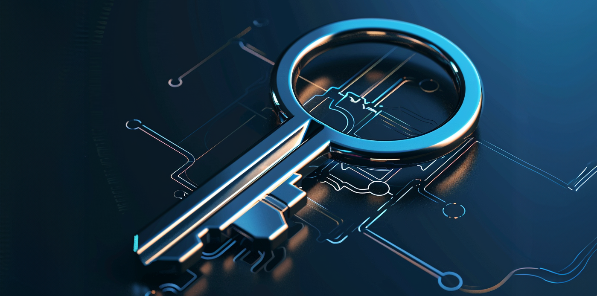
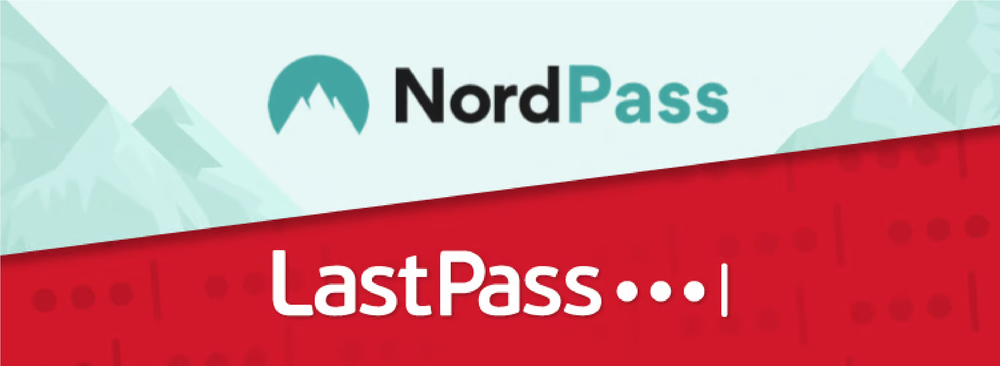

I en verden, hvor digitale trusler lurer rundt om hvert hjørne, er din adgangskode
den første forsvarslinje for dine onlinekonti. Men beskytter dine adgangskoder dig så godt, som de
kunne?
Forestil dig din adgangskode som nøglen til dit digitale kongerige. Det beskytter dine personlige
oplysninger, økonomiske detaljer og private samtaler mod nysgerrige øjne. Alligevel finder vi alt for
ofte ud af, at vi bruger svage, let gættelige adgangskoder eller genbruger den samme adgangskode på
tværs af flere konti, hvilket ubevidst efterlader os selv sårbare over for hackere og databrud.
Men frygt ej! InfoManiac er her for at give dig den viden og de værktøjer, du har brug for, for at
styrke dit onlineforsvar og holde dine følsomme oplysninger sikre og forsvarlige.
Tag med os på en rejse for at opdage hemmelighederne bag stærk adgangskodesikkerhed. Fra at forstå, hvad
der gør en adgangskode sikker til at mestre kunsten at skabe og administrere robuste adgangskoder, vi
har dækket dig hvert trin på vejen.
Så er du klar til at tage kontrol over din digitale sikkerhed? Lad os dykke ned og låse op for
hemmelighederne til sikrere onlineoplevelser sammen!
Forståelse af adgangskoder
I deres kerne er adgangskoder digitale nøgler, der giver adgang til vores virtuelle riger. De fungerer som gatekeepere til vores personlige konti og beskytter vores følsomme oplysninger mod uautoriseret adgang. Uanset om det er at logge ind på e-mail-konti, sociale medieplatforme eller netbanker, fungerer adgangskoder som den første forsvarslinje mod cybertrusler.
Vigtigheden af adgangskodesikkerhed:
Hvorfor er adgangskoder så afgørende inden for cybersikkerhed? De giver et lag af beskyttelse mod uautoriseret adgang og sikrer, at kun betroede personer kan komme ind på vores digitale domæner. Men styrken af vores adgangskoder bestemmer effektiviteten af dette forsvar. Svage eller let gættelige adgangskoder svarer til at lade hoveddøren til vores digitale huse stå på vid gab, hvilket inviterer ubudne gæster til at skabe kaos i vores online liv.
Almindelige adgangskodesikkerhedsfejl:
I vores søgen efter bekvemmelighed er det let at falde i fælden med almindelige
adgangskodesikkerhedsfejl. Fra at bruge enkle og forudsigelige adgangskoder til at genbruge den samme
adgangskode på tværs af flere konti, kan disse bortfald i bedømmelsen gøre os sårbare over for
cyberangreb. Men frygt ej! Ved at identificere disse faldgruber og lære bedste praksis kan vi styrke
vores forsvar og navigere i det digitale landskab med tillid.
I de følgende afsnit vil vi dykke dybere ned i adgangskodesikkerhedens forviklinger og udstyre dig med
viden og værktøjer til at skabe og administrere robuste adgangskoder, der står stærkt mod selv de mest
beslutsomme modstandere. Så er du klar til at hæve dit adgangskodespil og styrke dit onlineforsvar? Lad
os dykke ned!
I det stadigt udviklende landskab af cybersikkerhed er det måske ikke altid
tilstrækkeligt at stole udelukkende på adgangskoder. Heldigvis anvender mange websteder yderligere lag
af sikkerhedsforanstaltninger for yderligere at styrke deres forsvar mod uautoriseret adgang.
Lad os
undersøge nogle af disse metoder:
Ved at inkorporere disse avancerede sikkerhedsforanstaltninger sammen med stærk adgangskodepraksis kan websteder skabe robuste forsvar, der modstår en lang række cybertrusler. Uanset om det er at forhindre automatiserede angreb, verificere brugernes identitet eller begrænse adgangen til pålidelige kilder, spiller disse teknikker en afgørende rolle i at beskytte følsomme oplysninger og bevare integriteten af onlineoplevelser.
Tror du, at du ved alt, hvad der er at vide om at holde dine onlinekonti sikre?
Test din viden med vores hurtige quiz om adgangskode sikkerhed! Fra at skabe stærke adgangskoder til at
forstå avancerede sikkerheds foranstaltninger, vil denne quiz udfordre din forståelse af bedste praksis
for at beskytte din digitale identitet.
Så tag en kuglepen og et papir (eller bare hold styr på dit
hoved), og lad os dykke ind!
Quiz
Her er nogle yderligere resurser og anbefalede links vi synes, at du skal tjekke ud for at lære og forstå mere om data sikkerhed.
Artikler
-
Google har deres egen blog, hvor de udgiver artikler om datasikkerhed.
Læs mere: -
I denne artikel fra SikkerDigital kan du få gode råd til sikker adgangskoder.
Læs mere:
Videoer
-
Du kan altid finde TED talks der tilbyder god viden indenfor datasikkerhed.
Se her: -
Du kan altid finde TED talks der tilbyder god viden indenfor datasikkerhed.
Se her:
Online kurser
-
PluralSight tilbyder en 10 dages fri prøveperiode til deres kursus indenfor fundamentale datasikkerhed.
Læs mere:Fundamentale datasikkerheds kursus
Dette kursus dækker væsentlige cybersikkerhedskoncepter, herunder adgangskodesikkerhed, autentificering og adgangskontrol. Det er velegnet til begyndere, der ønsker at få en grundlæggende forståelse af cybersikkerhedsprincipper.
Udemy har mange gode kurser, der kan hjælpe dig med at forstå vigtigheden
bag datasikkerhed.
Læs mere:
Dette kursus dækker etiske hackingteknikker, herunder adgangskodeknækning og penetrationstest. Det er velegnet til personer, der er interesseret i at forstå, hvordan hackere udnytter sårbarheder, og hvordan man forsvarer sig mod sådanne angreb, herunder adgangskoderelaterede sårbarheder.
Værktøjer og software
-
Test din adgangskode her for, at se hvor sikkert det er.
Læs mere: -
NordPass er også en god adgangskode manager.
Læs mere: -
LastPass tilbyder også en god adgangskode manager.
Læs mere: -
Google tilbyder dog selv en gratis adgangskode manager.
Læs mere:
Konklussion
Tillykke med at have gennemført din rejse gennem InfoManiac, din ultimative guide
til adgangskodesikkerhed!
Bevæbnet med viden og praktisk indsigt er du nu rustet til at tage proaktive skridt til at styrke dit
digitale forsvar og beskytte dine værdifulde onlinekonti.
Husk, adgangskodesikkerhed handler ikke kun om at skabe komplekse adgangskoder; det handler om at
anlægge en holistisk tilgang til at sikre din digitale identitet. Ved at implementere bedste praksis
såsom at bruge stærke, unikke adgangskoder, aktivere multifaktorautentificering og være på vagt over for
phishing-forsøg, kan du reducere risikoen for uautoriseret adgang betydeligt og beskytte dine følsomme
oplysninger mod cybertrusler.
Men rejsen slutter ikke her. Efterhånden som teknologien udvikler sig, og cybertrusler fortsætter med at
udvikle sig, er det vigtigt at holde sig informeret og tilpasse din sikkerhedspraksis i overensstemmelse
hermed. Bliv ved med at udforske nye værktøjer, hold dig opdateret på de seneste sikkerhedstrends og
uddanne dig selv om nye trusler for at være et skridt foran cyberkriminelle.
Vi hos InfoManiac er her for at støtte dig på din igangværende rejse mod en sikrere og mere sikker
onlineoplevelse.
Tak, fordi du var med på dette eventyr inden for adgangskodesikkerhed. Sammen kan vi bygge en sikrere
digital verden for alle.
Vær sikker, vær på vagt, og husk: din digitale sikkerhed er i dine hænder!